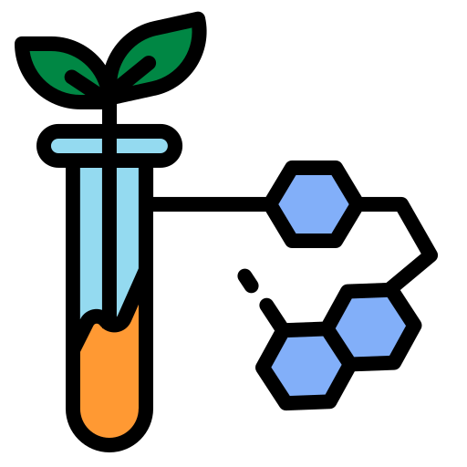

BioVitalAge Clocks: la Nuova Frontiera della Prevenzione Personalizzata
Età Biologica, Capacità Vitale, Resilienza ed Età Metabolica: indicatori chiave per la longevità.
Esplora gli Indicatori di Longevità:

Età Biologica
Calcolare l’età biologica vuol dire conoscere quanto è davvero in salute il corpo, oltre la semplice età anagrafica. Grazie all’analisi di biomarcatori ematici e algoritmi predittivi, BioVitalAge offre una valutazione accurata dello stato di salute complessivo dell’organismo, utile per prevenire rischi, personalizzare percorsi di salute e promuovere la longevità.

Capacità Vitale
Indica il livello di energia e la capacità dell’organismo di reagire a stress, malattie e cambiamenti. È un parametro che riflette l’equilibrio tra metabolismo, forza muscolare, funzione immunitaria. Monitorare la capacità vitale aiuta a preservare funzionalità e benessere lungo tutto l’arco della vita. BioVitalAge offre strumenti avanzati per valutarla in modo oggettivo e personalizzato.
Resilienza
La resilienza biologica misura la capacità dell’organismo di adattarsi, recuperare e mantenere l’equilibrio in presenza di stress, malattie o eventi traumatici. Grazie a parametri integrati su stress, infiammazione, metabolismo e performance fisica, BioVitalAge offre una valutazione completa e personalizzata di questa funzione chiave per la longevità.
Età Metabolica
L’età metabolica indica quanto efficiente risulta il metabolismo in relazione alla composizione corporea e allo stato nutrizionale. Valutare questo parametro permette di individuare squilibri, monitorare la salute metabolica e prevenire patologie croniche. BioVitalAge trasforma questi dati, in un’analisi completa e personalizzata, al fine di ottimizzare delle strategie concrete per un metabolismo attivo e performante.
Funzionalità e Caratteristiche della Piattaforma BioVitalAge
Integrazione API
Connetti facilmente le API di BioVitalAge ai tuoi siti web, applicazioni o sistemi, per integrare in modo immediato analisi avanzate sui biomarcatori dell’invecchiamento e indicatori predittivi personalizzati. Una soluzione completa per arricchire i tuoi servizi con valutazioni scientifiche affidabili e aggiornate.

Scalabilità e Flessibilità
BioVitalAge è progettato per adattarsi in modo flessibile a realtà di qualsiasi dimensione, dai grandi centri polispecialistici fino alle piccole strutture sanitarie. La piattaforma può essere implementata sia in modalità cloud sia in installazioni locali, garantendo la massima protezione dei dati in conformità alle normative vigenti. Un sistema scalabile e modulare, capace di crescere insieme alle esigenze della tua organizzazione.

Approfondimenti sulla salute
I nostri referti offrono una panoramica completa dello stato fisiologico dell’organismo, con approfondimenti mirati sui principali parametri biologici e funzionali. Un supporto utile per identificare eventuali squilibri, monitorare l’efficacia degli interventi e definire strategie personalizzavate di prevenzione e miglioramento della qualità della vita .

Aggiornamenti Continui
BioVitalAge evolve costantemente grazie all’integrazione di nuove ricerche, dati aggiornati e soluzioni innovative, per offrire un prodotto sempre più all’avanguardia e in linea con i recenti progressi scientifici.

Vantaggi di BioVitalAge
Per i Pazienti:
- Permette di individuare precocemente squilibri o segnali di rischio, favorendo interventi mirati prima dell’insorgenza della patologia.
- Supporta una gestione proattiva e preventiva della salute, orientata al mantenimento del benessere e alla longevità.
- Offre una maggiore consapevolezza e comprensione dello stato di salute, aiutando la persona ad assumere un ruolo attivo nelle proprie scelte e a sentirsi protagonista del proprio percorso di cura.
- Personalizza l’esperienza di cura integrando dati clinici, stile di vita e generando così piani personalizzati con lo scopo di impattare positivamente e migliorare la qualità della vita.
Per i Clienti
- Mettere a disposizione un servizio unico e innovativo, basato su un approccio integrato alla salute e alla longevità.
- Consentire al cliente di assumere un ruolo attivo nella gestione integrata della salute dei propri pazienti, grazie all’integrazione dei dati e a strumenti di monitoraggio avanzati, aumentando così la capacità di personalizzare interventi e di migliorare la qualità complessiva delle cure offerte.
- Proporre una soluzione predittiva e preventiva che supera il tradizionale modello di intervento sanitario, dimostrando un impegno concreto verso la prevenzione, la salute personalizzata e la riduzione dei costi futuri.
- Fornire un beneficio costante nel tempo, favorendo una relazione di fiducia e duratura tra i clienti e BioVitalAge.